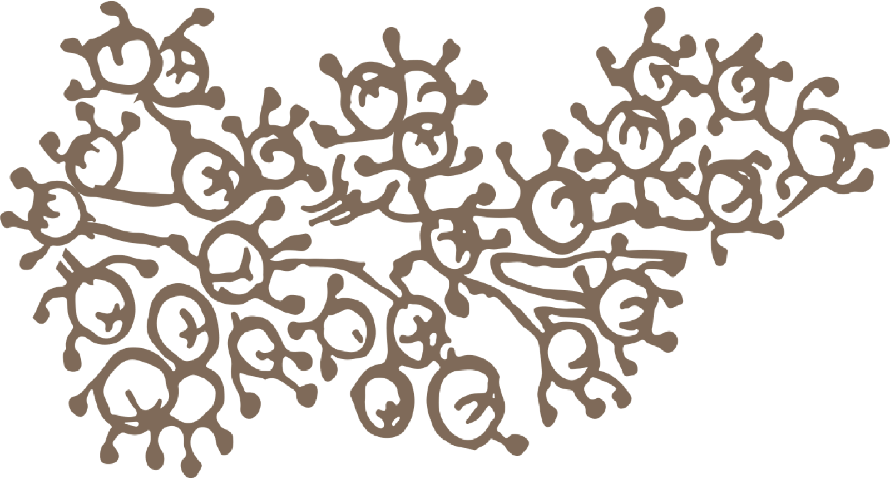
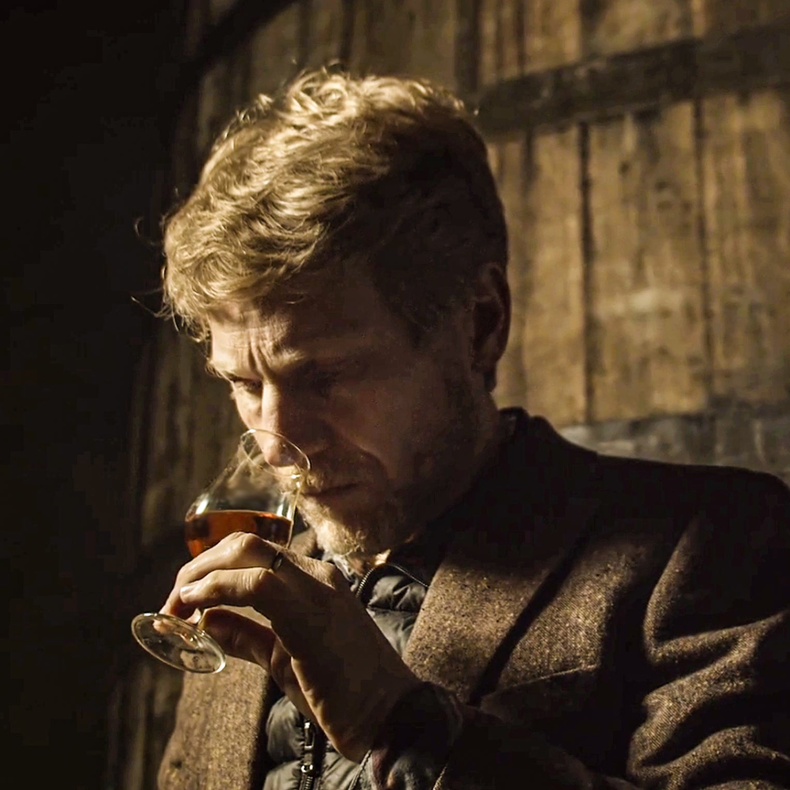

Cognac Napoléon
Cohesion Napoléon
En afbalanceret økologisk Cognac med længde, pebrede noter, tørret frugt og en mentholfrisk afslutning.
En afbalanceret økologisk Cognac med længde, pebrede noter, tørret frugt og en mentholfrisk afslutning.
Sortimentets succes bygger også på den styrke, hver af os har vist. Min bedstefar Marc og hans bror Roger, min bedstemor Germaine og mine forældre Pierre og Eliane har alle bidraget stærkt til dette engagement i økologisk landbrug. Det er et fælles arbejde gennem flere generationer. COHESION hylder dem.


Smagning
Smagsmarkører
En struktureret, balanceret afslutning, let pebret og mentoleret
Generøs fadlagring giver fine noter af tørret frugt, jordnød, mandel og hasselnød samt varmt træ og krydderier. Lang og pebret afslutning.
Sensoriske noter
Sensoriske noter
- Mund:Mandel, varmt let vaniljet egetræ, jordnød, hasselnød, pære, toffee
- Farve:Orangegul
- Næse:Fadlagring, der viser de første træ- og vaniljenoter.
- Gane:Fine egetanniner binder sig til noter af tørret frugt: mandel, hasselnød og valnød
- Afslutning:Struktureret, balanceret, let pebret og mentoleret
Detaljer
Produktdetaljer
- Kategori
- Cognac Napoléon
- Oprindelse
- Frankrig
- Indhold
- 700 ml
- Alkoholprocent
- 40 % vol
- Druesorter
- Ugni Blanc, Colombard, Folle Blanche
- GTIN
- 3322870010833
- GTIN 6 x 700 ml variant
- 3322870011045
Næringsværdier
| Næringsstof | Pr. 3 ml | Pr. 100 ml |
|---|---|---|
| Energi | 28,5 kJ / 6,8 kcal | 951 kJ / 227 kcal |
| Alkohol | 0,95 g | 31,6 g |
| Fedt | 0 g | 0 g |
| heraf mættede fedtsyrer | 0 g | 0 g |
| Kulhydrat | 0 g | 0,3 g |
| heraf sukkerarter | 0 g | 0,3 g |
| Protein | 0 g | 0 g |
| Salt | 0 g | 0 g |